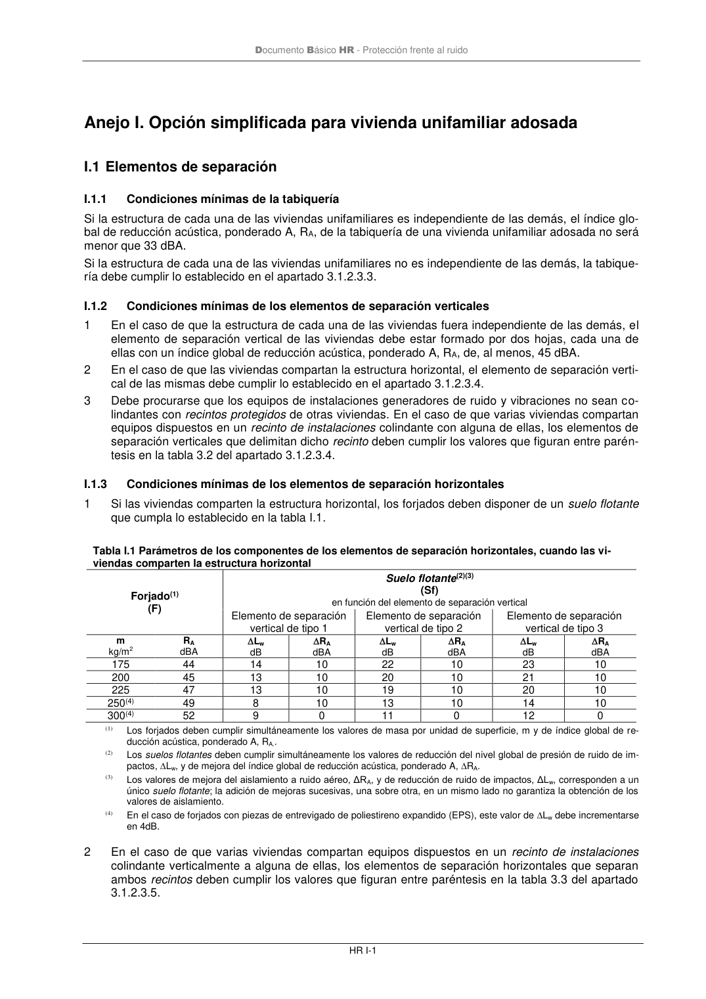

DB-HR · Anejo I. Opción simplificada para vivienda unifamiliar adosada · versión 2019-12-20
SHA256: a67baeca5138bb1f121f797d23a79a4557bd9ac4abacd954024893e05411eeab · página física 71 de 80 · métodos de encabezado
solo si están cotejados.
Formatos: Markdown · JSON de bloques · PDF p. 71 · imagen PNG
Documento Básico HR - Protección frente al ruido HR I-1 Anejo I. Opción simplificada para vivienda unifamiliar adosada I.1 Elementos de separación I.1.1 Condiciones mínimas de la tabiquería Si la estructura de cada una de las viviendas unifamiliares es independiente de las demás, el índice glo- bal de reducción acústica, ponderado A, RA, de la tabiquería de una vivienda unifamiliar adosada no será menor que 33 dBA. Si la estructura de cada una de las viviendas unifamiliares no es independiente de las demás, la tabique- ría debe cumplir lo establecido en el apartado 3.1.2.3.3. I.1.2 Condiciones mínimas de los elementos de separación verticales 1 En el caso de que la estructura de cada una de las viviendas fuera independiente de las demás, el elemento de separación vertical de las viviendas debe estar formado por dos hojas, cada una de ellas con un índice global de reducción acústica, ponderado A, RA, de, al menos, 45 dBA. 2 En el caso de que las viviendas compartan la estructura horizontal, el elemento de separación verti- cal de las mismas debe cumplir lo establecido en el apartado 3.1.2.3.4. 3 Debe procurarse que los equipos de instalaciones generadores de ruido y vibraciones no sean co- lindantes con recintos protegidos de otras viviendas. En el caso de que varias viviendas compartan equipos dispuestos en un recinto de instalaciones colindante con alguna de ellas, los elementos de separación verticales que delimitan dicho recinto deben cumplir los valores que figuran entre parén- tesis en la tabla 3.2 del apartado 3.1.2.3.4. I.1.3 Condiciones mínimas de los elementos de separación horizontales 1 Si las viviendas comparten la estructura horizontal, los forjados deben disponer de un suelo flotante que cumpla lo establecido en la tabla I.1. Tabla I.1 Parámetros de los componentes de los elementos de separación horizontales, cuando las vi- viendas comparten la estructura horizontal Forjado(1) (F) Suelo flotante(2)(3) (Sf) en función del elemento de separación vertical Elemento de separación vertical de tipo 1 Elemento de separación vertical de tipo 2 Elemento de separación vertical de tipo 3 m kg/m2 RA dBA Lw dB RA dBA Lw dB RA dBA Lw dB RA dBA 175 44 14 10 22 10 23 10 200 45 13 10 20 10 21 10 225 47 13 10 19 10 20 10 250(4) 49 8 10 13 10 14 10 300(4) 52 9 0 11 0 12 0 (1) Los forjados deben cumplir simultáneamente los valores de masa por unidad de superficie, m y de índice global de re- ducción acústica, ponderado A, RA.. (2) Los suelos flotantes deben cumplir simultáneamente los valores de reducción del nivel global de presión de ruido de im- pactos, Lw, y de mejora del índice global de reducción acústica, ponderado A, RA. (3) Los valores de mejora del aislamiento a ruido aéreo, ΔRA, y de reducción de ruido de impactos, ΔLw, corresponden a un único suelo flotante; la adición de mejoras sucesivas, una sobre otra, en un mismo lado no garantiza la obtención de los valores de aislamiento. (4) En el caso de forjados con piezas de entrevigado de poliestireno expandido (EPS), este valor de Lw debe incrementarse en 4dB. 2 En el caso de que varias viviendas compartan equipos dispuestos en un recinto de instalaciones colindante verticalmente a alguna de ellas, los elementos de separación horizontales que separan ambos recintos deben cumplir los valores que figuran entre paréntesis en la tabla 3.3 del apartado 3.1.2.3.5.
